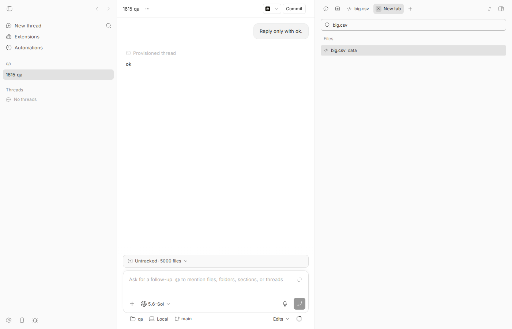
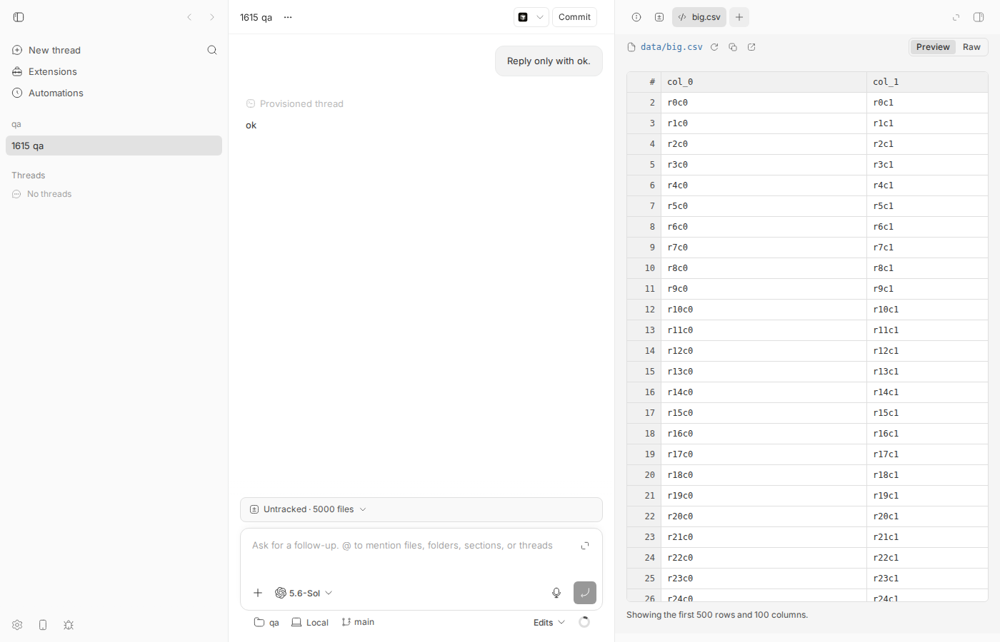
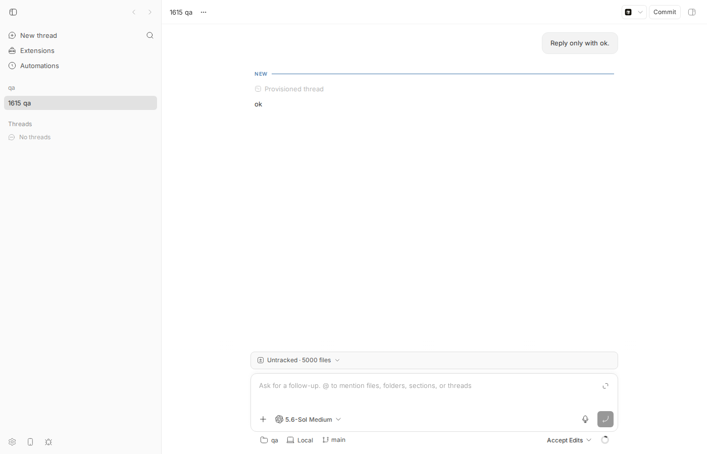
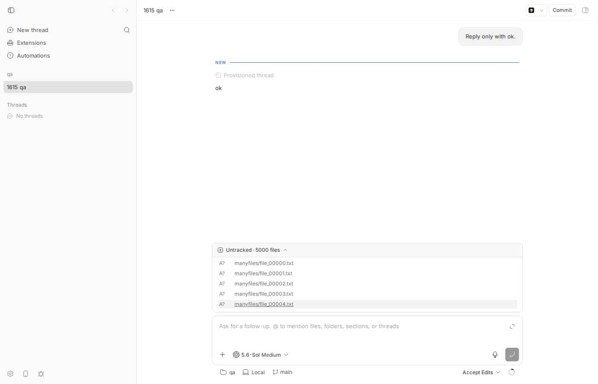
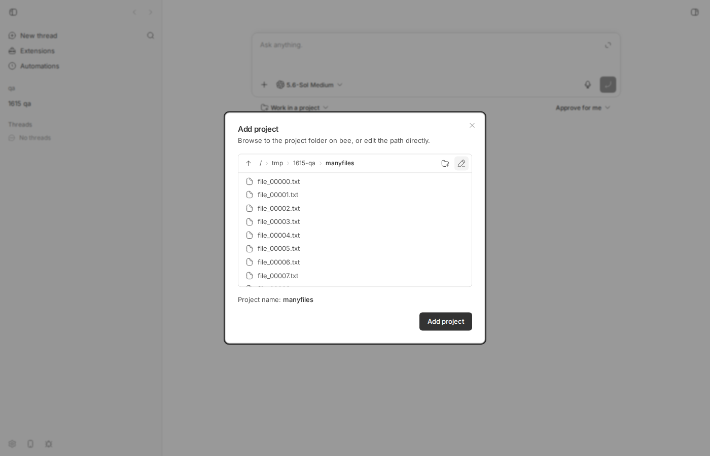

#1615 · Unbounded list rendering in 11 components: full arrays mapped into scroll surfaces (CSV preview can create ~50k cells)
TL;DR
Plain-language framing. Several React components in the bb web app take an array (CSV cells, directory entries, changed files, …) and call array.map(…) to create one DOM row per element, inside a small scrollable box. The box hides most rows visually, but the browser still has to build, style, and lay out every one of them. On a phone (the issue is filed against iOS Safari) that costs memory and blocks touch scrolling; on a desktop it costs a multi-second freeze.
This is an automated-audit issue that lists 11 files. I spot-checked every one against the base commit. Three surfaces really do render an unbounded (or very large) number of rows and I reproduced them in a real browser: (1) the CSV file preview creates exactly 50,000 <td> (plus one <span> each, 101k elements in the table) for a panel that shows about 50 cells, blocking the main thread for 2.0–2.8 s on this desktop and 8–11 s under 4× CPU throttling; (2) the "Untracked · N files" prompt banner (WorkspaceChangesList without limit) mounts one row per changed file — 5,000 rows / 20,000 elements for a 128 px box — and, worse than the issue says, they are in the DOM even while the banner is collapsed, and the workspace-status payload that feeds it is itself unbounded (425 KB, 5,000 files); (3) the "Add project" folder browser (RemotePathBrowser) renders every directory entry (5,000 <li> for a 224 px box) because the host daemon's readdir listing has no cap.
The remaining eight entries are either bounded upstream (branch picker: server default limit=50), tiny in practice (model list, plugin marketplace, machines list, todo list, child threads), a container primitive that maps nothing (CommandList; its only consumers are the tasks plugin's small cmdk pickers), or an outright misread: resource-pagination.tsx:306-309 is the items.slice(0, visibleCount) that implements a bounded window. The claim "no client limit bounds the row count" is also wrong for the CSV path — it is capped at 500×100 — the problem is that the cap is 50k cells and all of them are mounted at once. I could not test on iOS Safari (no device); the numbers below are headless Chromium.
Claims vs findings
| Claim | Status | Evidence |
|---|---|---|
CSV path in FilePreview.tsx "can create about 50,000 cells" | Verified (exactly) | 500 body rows × 100 columns → 50,000 <td> + 601 <th>, 101,306 elements in the table; browser run step4.out, jsdom test issue-1615-unbounded-lists.test.tsx. Main thread blocked 2.0 s (prod build, 1×), 8.4 s (prod build, 4× CPU throttle); DOM Nodes 34k → 184k; JS heap +33 MB. |
| "No client limit bounds the row count" | Refuted for CSV; verified for others | CSV is bounded to CSV_PREVIEW_MAX_ROWS = 500 × CSV_PREVIEW_MAX_COLUMNS = 100 since #520 (2026-07-07). WorkspaceChangesList (banner call site) and RemotePathBrowser have no client or server bound: 5,000 rows each in the repro. |
RemotePathBrowser.tsx:242,387 unbounded | Verified | 5,000 <li> in the h-56 box (step6.out). Host daemon host-files.ts lists the whole directory with fs.readdir and no cap. |
BranchPicker.tsx:570,1044 unbounded | Refuted in practice | Rows are mapped without a client cap, but the data is server-limited: PROJECT_SOURCE_BRANCHES_LIMIT = 50 (app), BRANCH_LIST_LIMIT_DEFAULT = 50, max 1,000 (server), limitBranchList in the daemon. Local + remote ⇒ ≤ 100 rows. |
ModelReasoningPicker.tsx:971-996 unbounded | Technically true, small data | Maps navRows; the model list per provider is tens of entries and already has a "More models" fold. Lines 971-996 are actually the provider tabs / search input; the map is at ~1016. |
BrowsePluginsTab.tsx:276 unbounded | Technically true, small data | Marketplace entries (dozens). Not a realistic memory problem. |
ThreadPromptContextBanner.tsx:404-405 (child threads) unbounded | Technically true | ChildThreadsBody maps all active child threads into max-h-40. Could matter for large fleets; not measured. |
ThreadTodoCard.tsx:104-109 unbounded | Technically true, small data | Agent todo lists are tens of items. |
UpdatesSettingsSection.tsx:896-920 unbounded | Technically true, small data | One row group per enrolled machine. |
WorkspaceChangesList.tsx:111-119 unbounded | Verified, worse than stated | Component has a bounded TruncatedList mode when limit is passed (metadata panel uses it: "Show 4995 more"), but the prompt banner passes no limit: 5,000 rows / 20,000 elements mounted, and mounted while collapsed (AnimatedBody only animates grid-rows). Upstream, WorkspaceStatus.workingTree.files (JSON path workspace.workingTree.files in the status response) is unbounded on the wire (425 KB for 5,000 files). |
packages/shared-ui/.../command.tsx:61 unbounded | Refuted | CommandList is a max-h-[300px] container wrapper; it maps nothing. Nothing in apps/app imports it; its only consumers are the tasks plugin's cmdk pickers (plugins/tasks/views/detail/rail.tsx:283, plugins/tasks/views/manage/new-task-dialog.tsx:569,634), which hold small lists. |
resource-pagination.tsx:306-309 unbounded | Refuted (misread) | Those lines are items.slice(0, visibleCount) in useResourceInfiniteItems, i.e. the bounded window itself (grows by pageSize on loadMore). |
| iOS Safari slows down / reloads the tab | Unverifiable here | No iOS device or simulator on this host. Chromium at 4× CPU throttle blocks 8–11 s on the CSV preview, which is consistent with the mechanism. |
Environment
- bb
16ceb3a54(main, 2026-08-18), worktree/home/sawyer/projects/bb/.claude/worktrees/wf_570fde41-63f-7. Nothing onorigin/mainafter the base touches these components exceptfe230cd3d(background-agent banner, unrelated) — not fixed. - Linux 7.0.0-29-generic, node v24.18.0, codex-cli 0.147.0 (one "Reply only with ok." turn to provision the thread's workspace).
- Dev instance: app
:17792(Vite dev), server:25792, host daemon:33792, data dir/home/sawyer/.bb-dev/projects-bb-.claude-worktrees-wf_570fde41-63f-7-8a03094805ce(all fromscripts/bb-dev-app current). Production build served withvite previewon:17793proxying/apiand/wsto:25792(vite.preview-1615.config.ts). - Browser: HeadlessChrome/145.0.7632.6 via
dev-browser(Playwright), viewport 1400×900. Hosthost_5tsbbs2tfu, projectproj_uzvv6df4kw→/tmp/1615-qa, threadthr_6isgdy7qwz, environmentenv_665hugj7gq.
Minimal reproduction
Fixture: a scratch git repo with a 600×120 CSV (committed) and 5,000 untracked files. It can live anywhere the host daemon can read (any absolute path); note that it creates ~5,000 inodes, so avoid a nearly-full tmpfs /tmp (df -i /tmp) — under $HOME is fine.
mkdir -p /tmp/1615-qa && cd /tmp/1615-qa && git init -q
python3 - <<'EOF'
import os, csv
os.makedirs("data", exist_ok=True)
with open("data/big.csv","w",newline="") as f:
w=csv.writer(f)
w.writerow([f"col_{c}" for c in range(120)])
for r in range(600):
w.writerow([f"r{r}c{c}" for c in range(120)])
os.makedirs("manyfiles", exist_ok=True)
for i in range(5000):
open(f"manyfiles/file_{i:05d}.txt","w").write("x")
EOF
git add data && git -c user.email=qa@example.com -c user.name=qa commit -qm init
pnpm install --frozen-lockfile --prefer-offline && pnpm exec turbo run build && scripts/bb-dev-app current. Note the App/Server/Host-daemon ports it prints, theneval "$(scripts/bb-dev-app env)"— this sets bothBB_SERVER_URLandBB_HOST_DAEMON_PORTfor your instance. Get the host id of your instance fromcurl -s $BB_SERVER_URL/api/v1/hosts.- Create the project and a thread (one tiny codex turn provisions the local workspace):
eval "$(scripts/bb-dev-app env)" # BB_SERVER_URL=http://localhost:25792 BB_HOST_DAEMON_PORT=33792 on my instance curl -s $BB_SERVER_URL/api/v1/hosts # → host_5tsbbs2tfu curl -s -X POST $BB_SERVER_URL/api/v1/projects -H 'content-type: application/json' \ -d '{"name":"qa","source":{"type":"local_path","path":"/tmp/1615-qa","hostId":"host_5tsbbs2tfu"}}' # → proj_uzvv6df4kw pnpm bb:dev thread spawn --project proj_uzvv6df4kw --provider codex \ --permission-mode accept-edits --title "1615 qa" --prompt "Reply only with ok." --json # → thr_6isgdy7qwzPitfall: setting onlyBB_SERVER_URL=…in front ofpnpm bb:dev thread spawnis not enough if your shell already carries aBB_HOST_DAEMON_PORT(every shell launched from a bb thread does; it points at the user's real daemon). The CLI then resolves the local host id from the wrong daemon and the server answersHTTP 404: Host not found. Real output of both forms is in step3-spawn.out:# outer shell: BB_HOST_DAEMON_PORT=38887 $ BB_SERVER_URL=http://localhost:25792 pnpm bb:dev thread spawn --project proj_uzvv6df4kw --provider codex --permission-mode accept-edits --title "1615 qa" --prompt "Reply only with ok." --json Error: Failed to create thread: HTTP 404: Host not found ELIFECYCLE Command failed with exit code 1. $ eval "$(scripts/bb-dev-app env)" # sets BB_SERVER_URL and BB_HOST_DAEMON_PORT for THIS instance # now BB_SERVER_URL=http://localhost:25792 BB_HOST_DAEMON_PORT=33792 $ pnpm bb:dev thread spawn --project proj_uzvv6df4kw --provider codex --permission-mode accept-edits --title "1615 qa" --prompt "Reply only with ok." --json { "id": "thr_6isgdy7qwz", "projectId": "proj_uzvv6df4kw", ... - Edit the URL/ids at the top of the scripts in 1615/repro/ and run them with
dev-browser --browser bb1615 --headless --timeout 180 run <script>. Each script uses its own named page (banner,csv) or a fresh anonymous page, so they can be run independently and in any order. Wait until the thread's turn has finished (thread statusidle) before running them.
A. CSV preview: 50,000 cells for ~50 visible
Script step4-open-csv.js: opens the thread, shows the right panel, "+" new tab, types big.csv in "Search files", Enter, then counts table cells. Output (step4.out):
before opening csv: {"nodes":20541,"tds":0}
csv preview: {"totalNodes":121845,"tableNodes":101306,"td":50000,"th":601,"bodyRows":500,"columns":100,
"scrollBox":{"w":507,"h":744},"scrollSize":{"w":28848,"h":14529},
"note":"Showing the first 500 rows and 100 columns."}
ms from Enter to table in DOM: 3228
Expected: a 507×744 px scroll box that shows ~25 rows × 2 columns holds on the order of a few hundred cells (virtualized or windowed). Actual: all 50,000 <td> (each wrapping a <span>) are mounted; the table is 28,848×14,529 px.

big.csv typed, before pressing Enter.
Cost, measured with the Long Tasks API and CDP Performance.getMetrics (step5-measure-csv.js against the Vite dev build, step5b-measure-csv-prod.js against the production build; outputs step5.out, step5b.out):
# dev build (React dev mode) — one invocation of step5-measure-csv.js: measure(1) then measure(4), each on its own fresh page
cpuThrottle=1x {"longTasksMs":[2812,200,1733,52],"longTaskTotalMs":4797,"maxLongTaskMs":2812,"heapBeforeMB":169,"heapAfterMB":169,"td":50000}
cpuThrottle=4x {"longTasksMs":[11179,767,190,79,64,5290,764],"longTaskTotalMs":18333,"maxLongTaskMs":11179,"heapBeforeMB":169,"heapAfterMB":169,"td":50000}
# production build (vite preview :17793 → server :25792) — one invocation of step5b-measure-csv-prod.js
cpuThrottle=1x {"longTasksMs":[475,135,2024],"longTaskTotalMs":2634,"maxLongTaskMs":2024,"heapBeforeMB":69,"heapAfterMB":69,"td":50000}
CDP metrics before: {"Nodes":34424,"LayoutCount":0,"RecalcStyleCount":0,"JSHeapUsedSize":60499448}
after: {"Nodes":183880,"LayoutCount":3,"RecalcStyleCount":14,"JSHeapUsedSize":94790076} heap delta MB: 33
cpuThrottle=4x {"longTasksMs":[8403,807,159,54,54,5515,191],"longTaskTotalMs":15183,"maxLongTaskMs":8403,"heapBeforeMB":111,"heapAfterMB":111,"td":50000}
CDP metrics before: {"Nodes":199025,"LayoutCount":0,"RecalcStyleCount":1,"JSHeapUsedSize":105950632}
after: {"Nodes":182608,"LayoutCount":3,"RecalcStyleCount":15,"JSHeapUsedSize":85531060} heap delta MB: -19
Opening one 570 KB CSV in the production build blocks the main thread for 2.0 s on this desktop and 8.4 s in a single task at 4× throttle (a rough phone stand-in), adds ~150k DOM nodes and 33 MB of JS heap. (The 34k "before" node count is the 5,000-file banner from experiment B already being mounted. In the 4× run the CDP Nodes/heap "before" values are inflated because the just-closed 1× page had not been garbage-collected yet in the same renderer — Performance.getMetrics counts the whole renderer process — so only the 1× CDP delta is meaningful; the Long Tasks numbers, which are per page, are valid for both.) performance.memory.usedJSHeapSize shows no delta because it is coarse-grained in headless Chromium; the CDP figure is the real one.
B. Prompt banner "Untracked · 5000 files": 5,000 rows in a 128 px box, mounted even when collapsed
Script step2-changed-files-banner.js. Output (step2.out):
DOM nodes before expanding banner: 20587
after expand: {"totalNodes":20587,"listRows":5000,"listClass":"space-y-1 overflow-auto max-h-32 px-3 pb-2 pt-1",
"listBox":{"h":128,"w":726},"scrollHeight":120008,"listNodes":20000}
Expected: a collapsed banner holds no rows; an expanded 128 px box holds a handful (the metadata panel version of the same list shows 5 + "Show 4995 more"). Actual: element count is identical before and after expanding (20,587) — the 5,000 <li> / 20,000 elements are always mounted on the thread page; the list is 120,008 px tall inside a 128 px box. Also 5,000 buttons named "Open manyfiles/file_NNNNN.txt" are in the accessibility tree while collapsed. The status payload feeding it: GET /api/v1/environments/env_665hugj7gq/status → HTTP 200, 425,343 bytes; JSON path workspace.workingTree.files has length 5000, one {"path":"manyfiles/file_00000.txt","status":"??","insertions":null,"deletions":null} per untracked file (env-status.json).


C. "Add project" folder browser: 5,000 rows in a 224 px box
Script step6-path-browser.js (sidebar "New project" → pencil "Edit path" → type /tmp/1615-qa/manyfiles → Enter). Output (step6.out):
input count 1
path browser: {"nodesBefore":537,"totalNodes":20385,"rows":5000,"boxH":224,"scrollH":132821,"boxNodes":20001} ms: 1747

<li> are mounted (list is 132,821 px tall).Unit-level repro (jsdom)
File: 1615/repro/issue-1615-unbounded-lists.test.tsx (copy to apps/app/src/components/secondary-panel/). It passes on main and documents the current DOM footprint; a fix should turn the two count assertions red and they should then be rewritten to the bounded numbers.
// @vitest-environment jsdom
import { cleanup, render } from "@testing-library/react";
import { afterEach, describe, expect, it, vi } from "vitest";
import { FilePreview } from "./FilePreview";
import { WorkspaceChangesList } from "@/components/thread/WorkspaceChangesList";
import type { WorkspaceChangedFile } from "@/components/thread/WorkspaceChangesList";
vi.mock("@pierre/diffs/react", () => ({ File: () => null, useWorkerPoolStats: () => ({}) }));
afterEach(() => cleanup());
function csv(rows: number, cols: number): string {
const header = Array.from({ length: cols }, (_, c) => `col_${c}`).join(",");
const body = Array.from({ length: rows }, (_, r) =>
Array.from({ length: cols }, (_, c) => `r${r}c${c}`).join(","));
return [header, ...body].join("\n");
}
describe("issue #1615: unbounded list rendering", () => {
it("CSV preview mounts every cell of the 500x100 window (50,000 <td>)", () => {
const { container } = render(
<FilePreview path="data/big.csv"
state={{ kind: "ready", file: { name: "big.csv", contents: csv(600, 120) },
lineRange: null, textPreviewKind: "csv" }} />);
const table = container.querySelector("table[aria-label$='CSV preview']");
expect(table!.querySelectorAll("tbody tr")).toHaveLength(500);
expect(table!.querySelectorAll("thead th")).toHaveLength(101);
expect(table!.querySelectorAll("td")).toHaveLength(50_000);
expect(table!.querySelectorAll("td > span")).toHaveLength(50_000);
expect(table!.querySelectorAll("*").length).toBeGreaterThan(100_000);
});
it("WorkspaceChangesList without `limit` mounts one row per changed file", () => {
const files: WorkspaceChangedFile[] = Array.from({ length: 5000 }, (_, i) => ({
path: `manyfiles/file_${String(i).padStart(5, "0")}.txt`, status: "??", insertions: null, deletions: null }));
const { container } = render(<WorkspaceChangesList files={files} className="max-h-32" />);
expect(container.querySelectorAll("li")).toHaveLength(5000);
});
});
$ cd apps/app && pnpm exec vitest run --config vitest.config.ts src/components/secondary-panel/issue-1615-unbounded-lists.test.tsx
Test Files 1 passed (1)
Tests 2 passed (2)
Duration 5.03s (tests 2.49s)
Root cause
A. CSV preview. CsvFilePreview maps bodyRows × columns straight into <tr><td><span> (FilePreview.tsx#L971-L995). The only bound is the parse cap CSV_PREVIEW_MAX_ROWS = 500 / CSV_PREVIEW_MAX_COLUMNS = 100 (L209-L210), which was chosen so parseCsvRows stops scanning multi-megabyte files, not to bound the DOM. 500×100 = 50,000 cells, each with a wrapping <span class="block max-w-full truncate"> and a title, all rendered synchronously in one React commit into a single overflow-auto box.
{bodyRows.map((row, rowIndex) => (
<tr key={rowIndex}>
<th scope="row" …>{rowIndex + 2}</th>
{columns.map((column) => {
const cell = row[column.index] ?? "";
return (
<td key={column.index} className="w-72 max-w-72 overflow-hidden …" title={cell}>
<span className="block max-w-full truncate">{cell}</span>
</td>);
})}
</tr>))}
B. Prompt banner changed-files list. WorkspaceChangesList has two modes (WorkspaceChangesList.tsx#L98-L119): with limit it renders a TruncatedList ("Show N more"), without it a plain ul.overflow-auto that maps every file. ThreadPromptContextBanner uses the second mode with className="max-h-32 …" and no limit (ThreadPromptContextBanner.tsx#L1148-L1163), and wraps it in AnimatedBody, which keeps children mounted and only toggles grid-rows-[0fr]/opacity-0/aria-hidden (L660-L687) — hence 20,000 elements on every thread page whose workspace is dirty, whether or not the user opens the banner. Upstream, Workspace.getStatus runs git status --porcelain=v1 --untracked-files=all and maps every entry into files with no cap (workspace.ts#L744-L820); the diff-files route has WORKSPACE_DIFF_MAX_FILES = 500 but the status route has nothing equivalent, so the 5,000-file list also travels the daemon → server → app path (425 KB) on every status refresh.
C. RemotePathBrowser. Maps data.entries into <li>/<button> inside an h-56 overflow-y-auto div (RemotePathBrowser.tsx#L240-L262, #L385-L390). The daemon handler readdirs the whole directory (host-files.ts#L150-L183) with no limit; only dotfiles and a skip-list are dropped.
Why the symptom follows. A scroll box with overflow:auto clips painting, not DOM. Every mounted row is styled, laid out (the CSV table is 28,848×14,529 px, table layout over 50k cells with sticky header/row-number cells) and kept in memory. React must also diff all rows on each re-render (the banner list re-renders on every workspace-status update). On WebKit/iOS the same work runs on a slower CPU with a tight per-tab memory budget, which is where "slow down or reload" comes from; on Chromium here it is a 2–14 s freeze.
Not root causes. BranchPicker is bounded by the server (limit=50, branch-list-query.ts#L4, project-queries.ts#L62). useResourceInfiniteItems (resource-pagination.tsx#L306-L309) is the windowing helper. CommandList (command.tsx#L54-L64) is a container primitive that maps nothing (used only by the tasks plugin's small cmdk pickers).
Proposed fix (first principles)
- CSV preview: virtualize rows.
@tanstack/react-virtualis already a dependency and already used with the same pattern inDiffFilesPanel.tsx. Keep the sticky<thead>, virtualize<tbody>rows over the existing scroll container (fixed row height =leading-5+ padding, soestimateSizeis exact), and optionally virtualize columns the same way (100 columns × 18 rem = 28k px wide). Fewer than ~40 rows × visible columns stay mounted; keyboard/selection ("Add to chat" viaSecondaryPanelSelectionActions) needs a check because text selection across unmounted rows would break — bound the selection to mounted rows or fall back to the source view. Cheapest interim: addcontent-visibility:auto; contain-intrinsic-size: auto 20pxon<tr>; that skips style/layout for offscreen rows but still allocates 50k elements, so it does not fix memory. Updateissue-1615-unbounded-lists.test.tsxto assert the bounded count. - Prompt banner: don't mount what's collapsed, and bound the list. In
ThreadPromptContextBannerrender the git body only whenisGitExpanded(or after first expand), and passlimittoWorkspaceChangesList(the metadata panel already does) or virtualize themax-h-32list. Separately, capworkingTree.filesat the boundary: add amaxFiles/truncatedpair to the status command mirroringWORKSPACE_DIFF_MAX_FILES. That changes the daemon → server contract (WorkspaceStatusshape), so it needs aHOST_DAEMON_PROTOCOL_VERSIONbump and the "N files" summary should keep the exact count (from porcelain entry count) while the list is truncated. - RemotePathBrowser: cap the listing. Add
limitto the daemon's directory-list command (likelimitBranchList) with atruncatedflag, default e.g. 500, and show "N more entries; type the path" in the dialog. Also a protocol-version bump. Client-side, virtualize theh-56list if the cap stays high. - Leave the small-data surfaces (models, plugins, machines, todos) alone; child threads in the banner could take the same
limit/"Show more" treatment if fleets get large. Close thecommand.tsxandresource-pagination.tsxentries as false positives.
What could go wrong: virtualized tables and sticky headers interact badly if row heights vary (CSV cells are single-line truncate, so they don't); the CSV "Copy CSV" / selection actions must operate on the data, not the DOM; truncating status files must not change hasUncommittedChanges/state semantics used by commit/PR flows in routes/environments.ts.
PR review
No open PRs are linked to this issue.
Related issues
- #1616: tracking issue for the 20-finding iOS Safari audit (this is finding 2).
- #1301: thread timeline never unmounts history (22k DOM nodes) — same pattern in the timeline, explicitly out of scope here.
- #1261 (closed): large active thread lists kept all sidebar rows mounted — precedent for windowing/virtualizing.
- #1749: timeline event budget assumes 0.06 ms/event; measured 0.479 ms — related mis-sized budget on a slow host.
Appendix
Commands run
git checkout 16ceb3a54
pnpm install --frozen-lockfile --prefer-offline
pnpm exec turbo run build
scripts/bb-dev-app current # app :17792, server :25792, daemon :33792
eval "$(scripts/bb-dev-app env)" # BB_SERVER_URL + BB_HOST_DAEMON_PORT for THIS instance (required for `thread spawn`)
# fixture repo: see "Minimal reproduction"
curl -s $BB_SERVER_URL/api/v1/hosts # host_5tsbbs2tfu
curl -s -X POST $BB_SERVER_URL/api/v1/projects -H 'content-type: application/json' \
-d '{"name":"qa","source":{"type":"local_path","path":"/tmp/1615-qa","hostId":"host_5tsbbs2tfu"}}' # proj_uzvv6df4kw
pnpm bb:dev thread spawn --project proj_uzvv6df4kw --provider codex \
--permission-mode accept-edits --title "1615 qa" --prompt "Reply only with ok." --json # thr_6isgdy7qwz (see step3-spawn.out for the 404 you get without BB_HOST_DAEMON_PORT)
curl -s $BB_SERVER_URL/api/v1/threads/thr_6isgdy7qwz | python3 -c "import sys,json; d=json.load(sys.stdin); print(d['status'], d['environmentId'])" # idle env_665hugj7gq
dev-browser --browser bb1615r --headless --timeout 120 run 1615/repro/step2-changed-files-banner.js > step2.out
dev-browser --browser bb1615r --headless --timeout 180 run 1615/repro/step4-open-csv.js > step4.out
dev-browser --browser bb1615r --headless --timeout 300 run 1615/repro/step5-measure-csv.js > step5.out # dev build, 1x then 4x (single invocation)
cp 1615/repro/vite.preview-1615.config.ts apps/app/ && (cd apps/app && pnpm exec vite preview --config vite.preview-1615.config.ts &) # :17793
dev-browser --browser bb1615r --headless --timeout 400 run 1615/repro/step5b-measure-csv-prod.js > step5b.out # prod build, 1x then 4x + CDP metrics (single invocation)
dev-browser --browser bb1615r --headless --timeout 120 run 1615/repro/step6-path-browser.js > step6.out
curl -s $BB_SERVER_URL/api/v1/environments/env_665hugj7gq/status -o 1615/repro/env-status.json -w "%{http_code} %{size_download}\n" # 200 425343
cp 1615/repro/issue-1615-unbounded-lists.test.tsx apps/app/src/components/secondary-panel/ && cd apps/app && \
pnpm exec vitest run --config vitest.config.ts src/components/secondary-panel/issue-1615-unbounded-lists.test.tsx
pnpm dev:stop
Bounds found while spot-checking (all at 16ceb3a54)
apps/app/src/components/secondary-panel/FilePreview.tsx:209 CSV_PREVIEW_MAX_COLUMNS = 100 apps/app/src/components/secondary-panel/FilePreview.tsx:210 CSV_PREVIEW_MAX_ROWS = 500 (since 72f3c4f6f, 2026-07-07, #520) apps/app/src/hooks/queries/project-queries.ts:62 PROJECT_SOURCE_BRANCHES_LIMIT = 50 apps/server/src/routes/branch-list-query.ts:4 BRANCH_LIST_LIMIT_DEFAULT = 50 packages/domain/src/host-list-limits.ts:4 BRANCH_LIST_LIMIT_MAX = 1_000 apps/server/src/constants.ts:32 WORKSPACE_DIFF_MAX_FILES = 500 (diff files only; status files unbounded) apps/server/src/constants.ts:23 WORKSPACE_STATUS_MAX_UNTRACKED_LINE_STAT_FILES = 50 (line stats only) apps/host-daemon/src/command-handlers/host-files.ts:150 fs.readdir(directory) — no limit packages/host-workspace/src/workspace.ts:806 files = entries.map(...) — no limit apps/app/package.json "@tanstack/react-virtual": "^3.14.2" (used by DiffFilesPanel.tsx)
Accessibility-tree evidence that the collapsed banner is fully mounted
// page.evaluate: names of the first 60 buttons on the thread page with the banner COLLAPSED [..., "Changed files: Untracked, 5000 files", "Open manyfiles/file_00000.txt", "Open manyfiles/file_00001.txt", "Open manyfiles/file_00002.txt", ... "Open manyfiles/file_00024.txt"] // continues to file_04999
Verification
An independent verifier followed the "Minimal reproduction" in a separate worktree at 16ceb3a54 with its own dev instance and fresh fixture. All three surfaces reproduced with identical numbers (CSV: td=50000, th=601, 101,306 table elements, 28,848×14,529 px scroll size, longest 4× task 14.0 s on the dev build; banner: 5,000 <li> in the 128 px box, DOM count unchanged by expanding, status payload 425,343 bytes with 5,000 files; path browser: 5,000 <li>, scrollHeight 132,821 in a 224 px box); the jsdom test passed 2/2; code excerpts and permalinks matched; nothing on origin/main after the base fixes this. Verifier findings and what changed in this revision:
- Major — thread spawn step failed as written (
HTTP 404: Host not foundwhen the shell inheritsBB_HOST_DAEMON_PORTfrom the user's real instance). Fixed: step 2 now useseval "$(scripts/bb-dev-app env)"beforepnpm bb:dev thread spawn, explains the pitfall, and shows the real failing and succeeding output (step3-spawn.out, reproduced again on this revision's instance). - Minor — step5/step5b scripts and outputs did not correspond to one clean run (scripts ended in
measure(4)only; .out files contained interleaved timeout traces). Fixed: both scripts runmeasure(1)thenmeasure(4), were re-run once each on the new instance, and step5.out / step5b.out are the verbatim single-run outputs. The report's numbers were updated to these runs (dev 2.8/11.2 s, prod 2.0/8.4 s max long task; +33 MB heap). - Minor — step6 page reuse could time out after step4. Fixed: step6 opens a fresh anonymous page at the app root; step4 uses its own named page and starts from a cleared
localStoragewith a fallback that clicks thebig.csvtab if the panel keeps the info tab active. Re-run outputs (step4.out, step6.out) and all five screenshots were regenerated on this revision's instance. - Minor —
CommandList"no consumers" was inaccurate:plugins/tasksuses it (rail.tsx:283, new-task-dialog.tsx:569,634). Wording corrected in TL;DR, claims table and root-cause section; the refutation stands (it maps nothing). - Minor — readability: the status field is now given as the JSON path
workspace.workingTree.files; the fixture section notes the ~5,000-inode footprint and that any daemon-readable absolute path works.